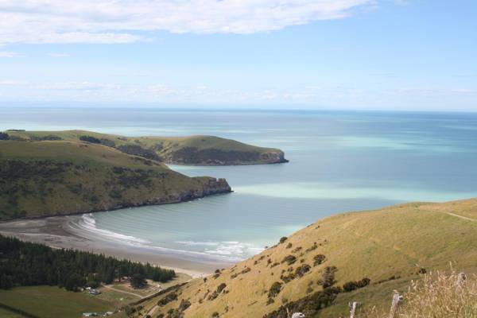
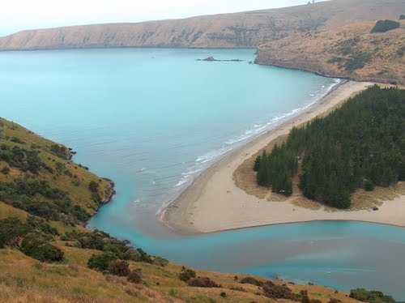

Okains Bay
Natur Pur
Geographische Länge: -43.710514°
Geographische Breite: 173.039031°
Seehöhe: 10m ü. NHN
Okains Bay liegt auf der Halbinsel Banks Peninsula rund 15 Kilometer von Akaora entfernt direkt am Meer.
Die wunderschönen Sandstrände von Okains Bay sind vor allem bei Wassersportlern beliebt.

Okains Bay von oben (Quelle: http://www.kawateafarmstay.co.nz/fastpage/images/okains_bay_large.jpg).

Der Strand von Okains Bay (Quelle: http://mw2.google.com/mw-panoramio/photos/medium/65258581.jpgg).
Quellen
-
http://www.kawateafarmstay.co.nz/fastpage/images/okains_bay_large.jpg
-
http://mw2.google.com/mw-panoramio/photos/medium/65258581.jpgg
Paul Tiefenbacher, https://github.com/sh4pefile/sh4pefile.github.io